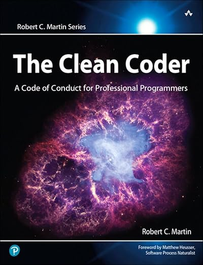

The Clean Coder

A Code of Conduct for Professional Programmers
Robert C. Martin
Published: 2011
ChatGPT's summary
Genre: Software development, professional conduct
Focus: What it means to be a professional software developer—beyond just writing code.
✅ Core Premise:
While Clean Code (his earlier book) focuses on how to write clean code, The Clean Coder is about how to act like a professional in your work. Uncle Bob shares lessons from decades in the industry, emphasizing discipline, communication, responsibility, and ethics.
🧠 Key Lessons & Themes:
1. Professionalism Is a Discipline
- You’re not just writing code—you’re committing to quality, reliability, and accountability.
- Professionals say no when they can’t deliver. They don’t commit to unrealistic deadlines just to please people.
2. Saying "No" Is Part of the Job
- A recurring theme: professionals must learn to say no to protect their integrity.
- Agreeing to impossible timelines or skipping tests may please the boss short-term, but harms the product and team long-term.
3. Coding = Thinking
- Real coding involves deep focus, deliberate design, and constant learning.
- Avoid chaotic, reactive coding. Use TDD, pair programming, and refactoring to stay sharp and clean.
4. Test-Driven Development (TDD)
- TDD isn’t just a testing technique—it's a design tool.
- Writing tests first helps you think clearly about what the code should do, leading to simpler, better-structured software.
5. Time Management & Avoiding Burnout
- Track how you spend your time. Don’t let interruptions or disorganized work rob your productivity.
- Being “heroic” by pulling all-nighters isn't professional—it’s dangerous.
- Burnout is real, and professionals need to take care of their mental and physical health.
6. Communication Skills Matter
- Being a professional means communicating clearly and often: with managers, teammates, and customers.
- You must be able to negotiate deadlines, explain technical trade-offs, and admit mistakes without ego.
7. Continuous Learning
- A clean coder never stops learning. Read books, practice code katas, attend meetups, and stay sharp.
- Uncle Bob recommends dedicating 20 hours per week to learning outside work (which many see as aspirational).
8. Professional Ethics
- Don’t compromise code quality to cut corners.
- Don’t cover up mistakes—own them.
- Prioritize the interests of your users, team, and long-term product health over short-term convenience.
🧾 Key Practices Encouraged:
- Test-Driven Development (TDD)
- Pair Programming
- Daily Code Practice (e.g. katas)
- Code Reviews
- Honest and transparent communication
- Saying "No" responsibly
⚖️ Who Should Read This Book?
- Junior to mid-level developers looking to grow professionally
- Senior developers and tech leads mentoring others
- Anyone in software who wants to write better code and be a better teammate
🧩 In Summary:
The Clean Coder teaches that professionalism in software is about more than writing code—it's about how you communicate, commit, and conduct yourself. It's a call to higher standards, discipline, and respect for the craft.
🔁 Comparison: Clean Code vs. The Clean Coder
| Feature |
Clean Code |
The Clean Coder |
| Focus |
How to write readable, maintainable code |
How to behave like a professional |
| Style |
Technical, example-rich |
Narrative, reflecting |
| Topics |
Naming, functions, testing, formatting, etc. |
Communication, responsibility, time management |
| Use Case |
Writing better code |
Becoming a better software craftsman |